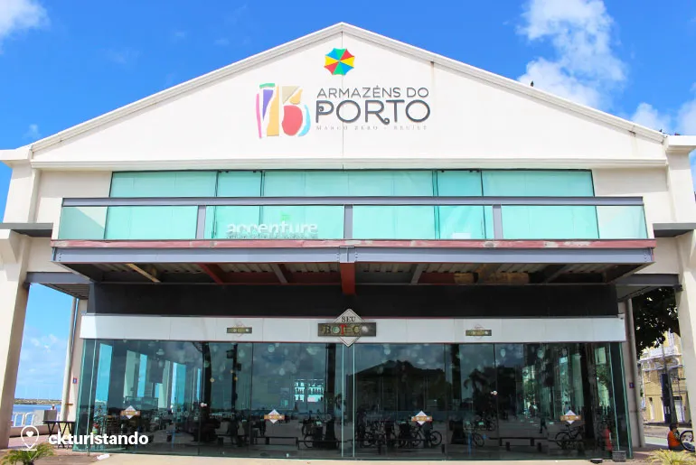

Marco Zero
Conheça Marco Zero a "Veneza Brasileira", que fica em Pernambuco!
Armazém do Porto
Recém restaurado, o Armazém do Porto conta com várias opções de bares e restaurantes, com vista para o Rio Capibaribe, são bem movimentados durante a noite. Vamos dar a dica de três deles que você não pode deixar de ir e provar algumas comidinhas com sabor do nordeste.
DICA:
Praça Rio Branco

A Praça Rio Branco mais conhecida como Praça do Marco Zero em Recife, foi o ponto de origem da capital Pernambucana, foi instalado dia 31 de Janeiro de 1938, feito pelo artista plástico pernambucano Cícero Dias, no chão é possível ver a Rosa dos Ventos e sua frase “Eu vi o mundo… Ele começava no Recife”. O Marco Zero é um dos principais cartões postais da cidade de Recife, foi palco da famosa paródia do Whindersson Nunes “Qual a Senha do Wi-Fi?” e também um dos principais palcos do famoso Carnaval de Recife.